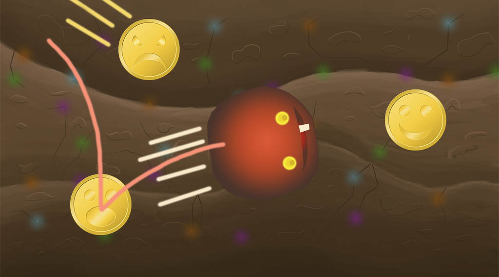
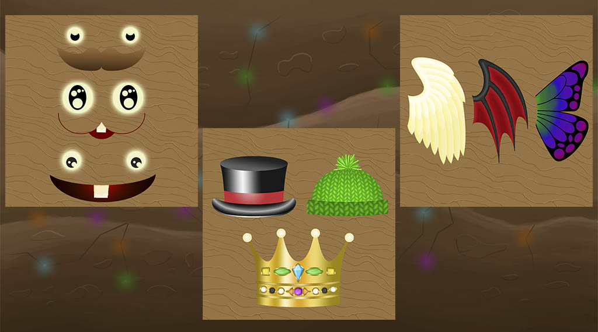
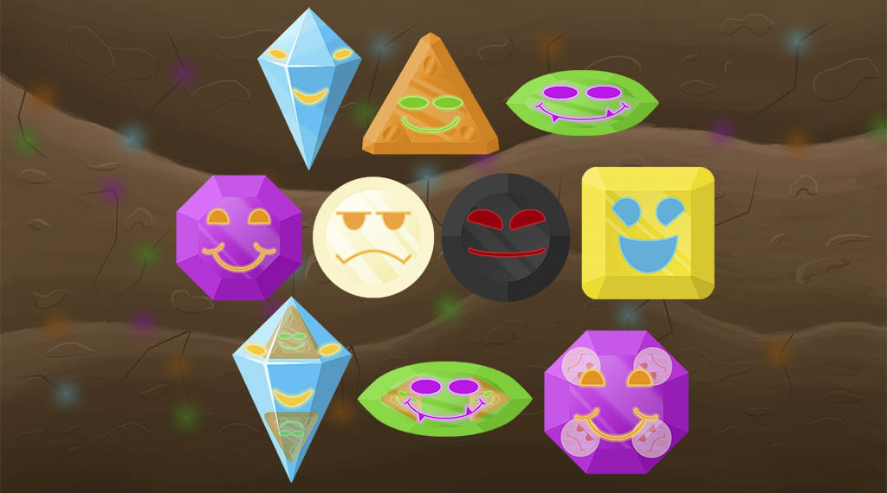
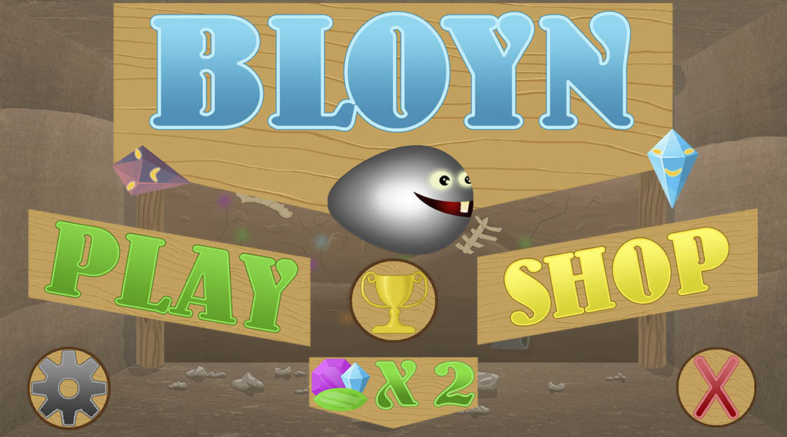

The mobile game Bloyn
 To try the game click here
To try the game click here
DISCLAIMER:
This game was built to be a mobile game only, so the
controls may seem a little strange for desktop,
but they do work perfectly fine.
Also Unity's WebGL build is not optimized for phone
browsing yet, so it might lag a bit but is playable.
Doing my Higher Technical Exam education (HTX), which is similar to the level of a Senior High School in USA, we were on a school trip to Seattle in autumn 2016. The trip lasted for a month and doing that trip we were tasked in groups to make a game. This is how the mobile game Bloyn started development.
Project length: 1 month in total
Project finished: Early 2018
The birth of the game
One from my group, came up with this idea of a game where you control the difficulty yourself. That developed into a game, where you controlled a slime thing which collected coins. When a coin was collected it will try to attack you. So, if you wanted the game to be harder you should just start collecting more coins. The more coins you collect before dying the higher the score.
Adding cosmetics
As a basic game it was pretty fun, but we quickly realized, that a new score record is not really enough in itself to keep a player motivated, it also quickly got boring when the coins only had one way to attack you. The game was missing a different kind of reward, and some new challenges. So, we came up with the idea of adding an in-game currency system, where every time you collected a coin in the game, you gain some currency you could spend in the in-game shop to buy cosmetics.
Making the game more exciting
To make the game more challenging, we came up with different ways the coins could attack you. That quickly became problematic, since we wanted to give the player a way for them to know which coin did which attack, and a different round coin shape and/or colour was not clear enough when the player was trying to avoid the attacking coins and collect the idle coins. So, we changed the coins to gems, which allowed way more creative freedom when trying to make different shapes for the different attacks.
An invisible level system
The changes worked out well and the game Bloyn took shape and was fun to play.
That could of course just be my bias view ;), so I’ll let you judge that
yourself. We didn’t have time to test the game back in 2016, so I would
gladly here your feedback.
There was just one more issue we wanted to fix, aside from all the bugs
of course. With all the new different gems added to the game, we did not
want them all to have a change to spawn from the start, that would just
overwhelm a new player. To fix that we made an invisible level system,
where the longer you survive, the higher level you will be on and new gems
with unique attacks would have a change to spawn.
The invisible level system gave the game a form of progression which it
needed badly. The problem is that every time the player dies, they would
have to start over from the first level, which would become annoying if
you play the game a lot.
Trust me, we tested the game a lot through development, it was annoying.
So, we added a way to start on a later level, and made it a thing you
could buy in the in-game shop using in-game currency, that you would
collect from playing the game. This gave an extra sense of progression
and made it possible for the player to start on a harder level, as they
get more used to the game. It is also hard to survive for long enough
to experience the gems that spawn on the latest levels, so this way it
would also be easier to experience those gems, and in that sense be
sort of a reward for playing the game a lot.
My main contribution
This project was back when I wanted to become a graphic designer, so my main contribution was making 98% of all the graphic assets in the game. Since I was the one who had to design the different gem shapes and pick their colour, I was also the one who came up with most of the different attacks. Those ideas were then handed over to one of my friends in the group, who pretty much worked with all the programming and setting it up in Unity, which was the engine we used to make the game.
It was also him and me, who one and a half year later in the early 2018 sat down and finished the game, to release it for free on the Google Store under my friend’s name. It has since disappeared from the store and frankly I do not know why, but we do thankfully still possess all the files. So, if you want to try it out, I’ve made a WebGL build of the game and uploaded it for this portfolio.
